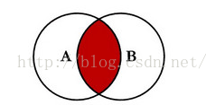
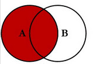
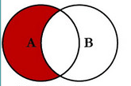
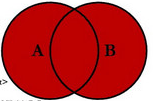
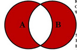

[TOC]
MySQL
语法
# shell 命令
shell> type a shell command here
# 以root模式执行的shell
root-shell> type a shell command as root here
# 通过mysql客户端执行的命令
mysql> type a mysql statement here
2 安装以及升级 MySQL
2.1.1 MySQL 版本
- MySQL Community Server 社区版本，开源免费，但不提供官方技术支持。
- MySQL Enterprise Edition 企业版本，需付费，可以试用30天。
- MySQL Cluster 集群版，开源免费。可将几个MySQL Server封装成一个Server。
- MySQL Cluster CGE 高级集群版，需付费。
- MySQL Workbench（GUI TOOL）一款专为MySQL设计的ER/数据库建模工具。它是著名的数据库设计工具DBDesigner4的继任者。MySQL Workbench又分为两个版本，分别是社区版（MySQL Workbench OSS）、商用版（MySQL Workbench SE）
community为社区版
包含的几个软件:
- mysql server是mysql服务
- mysql cluster是集群版
- mysql shell: mysql-shell是一个高级的mysql命令行工具、它直接两种模式(交互式&批处理式)三种语言(javascript\python\sql）
- mysql workbench是mysql提供的可视化编辑工具
- mysql connectors是mysql连接不同语言的连接层,如nodejs, python等调用mysql的连接层
下载安装Server https://dev.mysql.com/downloads/mysql/
2.4 mac 安装mysql
- 安装mysql
brew install mysql
查看brew的安装目录
brew --prefix
查看brew安装的某个文件的安装目录
# 查看brew安装的mysql的安装目录
brew --prefix mysql
- 创建datadir
basedir为mysql的安装目录 datadir 为mysql数据文件
shell>cd BASEDIR
shell>mkdir data
# 修改文件夹owner
shell>sudo chown mysql:mysql data
# 修改文件夹权限
shell>sudo chmod 750 data
- 配置/ect/my.cnf
[mysqld]
datadir=/usr/local/opt/mysql/data
port=3306
user=mysql
[mysql.server]
basedir=/usr/local/opt/mysql
- 初始化data文件夹
shell>sudo mysqld --initialize --user=mysql
# 在输出的项目中会输出随机设置的密码
启动server
shell>sudo mysql.server start连接数据库
mysql -u
shell> mysql -uroot -p
# 输入密码, 即可连接
- 修改密码
mysql> ALTER USER 'root'@'localhost' IDENTIFIED BY 'new_password';
- 测试
mysql> show databases;
2.10 Postinstallation Setup and Testing 安装之后需要做以下事情
https://dev.mysql.com/doc/refman/8.0/en/data-directory-initialization-mysqld.html
- 初始化data directory, 同时创建mysql默认权限表(grant tables), 有些版本在安装时会自动完成这一步
- 启动server
- 在grant tables中设置root账户的密码
- 设置server的自动启动
- 设置时区
初始化数据库文件夹
进入basedir, 为mysql的安装路径,如 /usr/local/opt/mysql
shell>cd basedir
- 创建文件夹, 该文件夹用来存放mysql执行时的数据库文件
shell> cd /usr/local/mysql
# 创建数据文件夹, 该文件会被赋予全局变量 secure_file_priv
shell> mkdir mysql-files
- 给该文件设置mysql的权限, 在mac上用户和用户组需要设置为 mysql:mysql
mac上mysql执行使用的用户是_mysql 可以通过 dscl . list /Users 查看mac中的用户
shell> chown mysql:mysql mysql-files
shell> chmod 750 mysql-files
- 初始化该文件夹
会创建包括mysql的database和grant tables
# --user指定用户, --basedir 指定mysql的basedir, --datadir指定data文件夹
shell> bin/mysqld --initialize --user=mysql
安装的命令
可以查看安装的命令
shell> ls /usr/local/mysql/bin
启动server
如果系统安装了 mysqld_safe 则可以用下面的命令启动
shell> bin/mysqld_safe --user=mysql &
如果使用rpm包安装则使用systemd 命令
如果安装了systemd则使用以下方式启动
shell> systemctl start mysqld
mysql server需要使用unprivileged (non-root) 账号启动, 因此可以使用--user来指定用户
server状态测试
验证server是否启动并且可以建立连接
shell> bin/mysqladmin version
shell> bin/mysqladmin variables
指定root账号连接
shell> bin/mysqladmin -u root -p version
Enter password: (enter root password here)
测试是否可以关闭连接
shell> bin/mysqladmin -u root shutdown
是否可以重启server
shell> bin/mysqld_safe --user=mysql &
查看当前存在的数据库
shell> mysqlshow -u root
+--------------------+
| Databases |
+--------------------+
| information_schema |
| mysql |
| performance_schema |
| sys |
+--------------------+
查看数据库中的表
# 列出数据库mysql中的表
shell> mysqlshow -u root mysql
查看mysql变量
mysqladmin variables -u root -h host_name
错误情况
当启动mysqld时如果提示Permission denied表示没有data directory的权限,此时可以通过修改该文件的权限来解决, 也可以用root模式启动Server, 这种方式会有一些风险.
添加权限
shell> chown -R mysql /usr/local/mysql/data
shell> chgrp -R mysql /usr/local/mysql/data
给mysql账户设置密码
mysql在初始化的时候会初始化data文件夹, 其中会创建grant tables,这个表里定义了mysql的账号
更改密码
- 有已知密码
mysql> ALTER USER 'root'@'localhost' IDENTIFIED BY 'new_password';
- 未设置密码
# 连接Server, 不使用密码
shell> mysql -u root --skip-password
# 设置一个密码
mysql> ALTER USER 'root'@'localhost' IDENTIFIED BY 'new_password';
连接server
# 连接数据库 host是数据库的服务, 省略则连接本机, -u 设置数据库用户名, -p 密码, 如果要带密码的话需要紧跟-p 如, -p123456, 可以加数据库名则直接选择该数据库.
shell> mysql [-h host] -u root -p [database_name]
Enter PASSWORD ****
# 连接成功之后进入mysql模式, 可以开始输入sql语句
mysql>
退出连接
mysql> quit
查看mysql 运行状态
sudo /usr/local/mysql/support-files/mysql.server status
启动mysql
sudo /usr/local/mysql/support-files/mysql.server start
重启MySQL
sudo /usr/local/mysql/support-files/mysql.server restart
停止MySQL
sudo /usr/local/mysql/support-files/mysql.server stop
修改密码
/usr/local/mysql/bin/mysqladmin -u root password <your-password>
查看端口
# 登录mysql
mysql -u root -p
mysql> SHOW GLOBAL VARIABLES LIKE 'PORT';
查看变量
mysql> SHOW [GLOBAL | SESSION] VARIABLES
[LIKE 'pattern' | WHERE expr]
4 MySQL Programs 包含的程序
4.2.7 my.cnf配置文件
文档 https://dev.mysql.com/doc/refman/8.0/en/option-files.html
这是mysql的配置文件.
windows下mysql的配置文件在 /c/ProgramData/MySQL/MySQL Server 8.0/my.ini
my.cnf文件的查找顺序
/etc/my.cnf
/etc/mysql/my.cnf
/usr/local/etc/my.cnf
~/.my.cnf
my.cnf 配置
#
# The MySQL database server configuration file.
#
# You can copy this to one of:
# - "/etc/mysql/my.cnf" to set global options,
# - "~/.my.cnf" to set user-specific options.
#
# One can use all long options that the program supports.
# Run program with --help to get a list of available options and with
# --print-defaults to see which it would actually understand and use.
#
# For explanations see
# http://dev.mysql.com/doc/mysql/en/server-system-variables.html
# This will be passed to all mysql clients
# It has been reported that passwords should be enclosed with
# ticks/quotes escpecially if they contain "#" chars...
# Remember to edit /etc/mysql/debian.cnf when changing
# the socket location.
[client]
port = 3306
#socket = /var/run/mysqld/mysqld.sock
# Here is entries for some specific programs
# The following values assume you have at least 32M ram
# This was formally known as [safe_mysqld]. Both versions
# are currently parsed.
[mysqld_safe]
#socket = /var/run/mysqld/mysqld.sock
#nice = 0
[mysqld]
#
# * Basic Settings
#
#
# * IMPORTANT
# If you make changes to these settings and your system uses
# apparmor, you may also need to also adjust
# /etc/apparmor.d/usr.sbin.mysqld.
#
#user = mysql
#socket = /var/run/mysqld/mysqld.sock
port = 3306
#basedir = /usr
datadir = /usr/local/var/mysql
#tmpdir = /tmp
skip-external-locking
#
# Instead of skip-networking the default is now to listen only on
# localhost which is more compatible and is not less secure.
bind-address = 127.0.0.1
#
# * Fine Tuning
#
key_buffer = 16M
max_allowed_packet = 16M
thread_stack = 192K
thread_cache_size = 8
# This replaces the startup script and checks MyISAM tables if needed
# the first time they are touched
myisam-recover = BACKUP
#max_connections = 100
#table_cache = 64
#thread_concurrency = 10
#
# * Query Cache Configuration
#
query_cache_limit = 1M
query_cache_size = 16M
#
# * Logging and Replication
#
# Both location gets rotated by the cronjob.
# Be aware that this log type is a performance killer.
# As of 5.1 you can enable the log at runtime!
#general_log_file = /var/log/mysql/mysql.log
#general_log = 1
log_error = /usr/local/var/mysql/MacBook15.local.err
# Here you can see queries with especially long duration
#log_slow_queries = /var/log/mysql/mysql-slow.log
#long_query_time = 2
#log-queries-not-using-indexes
#
# The following can be used as easy to replay backup logs or
# for replication.
# note: if you are setting up a replication slave, see
# README.Debian about other settings you may need
# to change.
#server-id = 1
#log_bin = /var/log/mysql/mysql-bin.log
expire_logs_days = 10
max_binlog_size = 100M
#binlog_do_db = include_database_name
#binlog_ignore_db = include_database_name
#
# * InnoDB
#
# InnoDB is enabled by default with a 10MB datafile in /var/lib/mysql/.
# Read the manual for more InnoDB related options. There are many!
#
# * Security Features
#
# Read the manual, too, if you want chroot!
# chroot = /var/lib/mysql/
#
# For generating SSL certificates I recommend the OpenSSL GUI "tinyca".
#
# ssl-ca=/etc/mysql/cacert.pem
# ssl-cert=/etc/mysql/server-cert.pem
# ssl-key=/etc/mysql/server-key.pem
# Query Caching
query-cache-type = 1
# Default to InnoDB
default-storage-engine=innodb
[mysqldump]
quick
quote-names
max_allowed_packet = 16M
[mysql]
#no-auto-rehash # faster start of mysql but no tab completition
[isamchk]
key_buffer = 16M
4.3 server 启动
4.3.1 mysqld - The MySQL Server
这个是mysql的server程序， 可以管理mysql的数据文件夹， data
查看帮助
shell> mysqld --verbose --help
4.3.2 mysqld_safe MySQL Server Startup Script
文档 https://dev.mysql.com/doc/refman/8.0/en/mysqld-safe.html
推荐使用该命令启动server，其中增加了一些安全特性
该命令会尝试调用mysqld， 该命令和mysqld的参数大部分一致
命令的可选参数
| Format | Description |
|---|---|
| --basedir | Path to MySQL installation directory |
| --core-file-size | Size of core file that mysqld should be able to create |
| --datadir | Path to data directory |
| --defaults-extra-file | Read named option file in addition to usual option files |
| --defaults-file | Read only named option file |
| --help | Display help message and exit |
| --ledir | Path to directory where server is located |
| --log-error | Write error log to named file |
| --malloc-lib | Alternative malloc library to use for mysqld |
| --mysqld | Name of server program to start (in ledir directory) |
| --mysqld-safe-log-timestamps | Timestamp format for logging |
| --mysqld-version | Suffix for server program name |
| --nice | Use nice program to set server scheduling priority |
| --no-defaults | Read no option files |
| --open-files-limit | Number of files that mysqld should be able to open |
| --pid-file | Path name of server process ID file |
| --plugin-dir | Directory where plugins are installed |
| --port | Port number on which to listen for TCP/IP connections |
| --skip-kill-mysqld | Do not try to kill stray mysqld processes |
| --skip-syslog | Do not write error messages to syslog; use error log file |
| --socket | Socket file on which to listen for Unix socket connections |
| --syslog | Write error messages to syslog |
| --syslog-tag | Tag suffix for messages written to syslog |
| --timezone | Set TZ time zone environment variable to named value |
| --user | Run mysqld as user having name user_name or numeric user ID user_id |
4.3.3 mysql.server — MySQL Server Startup Script
文档 https://dev.mysql.com/doc/refman/8.0/en/mysql-server.html
在Unix and Unix-like系统中包含mysql.start命令， 会通过调用mysqld_safe来启动或停止服务
shell> mysql.server start
shell> mysql.server stop
mysql.server读取my.cnf中的[mysql.server] and [mysqld]配置项
mysql.server 支持以下参数, 这些参数只能放在配置文件中, 不能添加在命令行参数上 basedir 是mysql的安装文件夹 datadir 是mysql的数据文件夹
| Option Name | Description | Type |
|---|---|---|
| basedir | Path to MySQL installation directory | Directory name |
| datadir | Path to MySQL data directory | Directory name |
| pid-file | File in which server should write its process ID | File name |
| service-startup-timeout | How long to wait for server startup | Integer |
4.5 客户端
连接mysql
shell> mysql -u user -p<password> -h localhost -P 3306
4.5.4 mysqldump 数据库备份
语法
shell> mysqldump [options] db_name [tbl_name ...]
shell> mysqldump [options] --databases db_name ...
shell> mysqldump [options] --all-databases
备份生成的是一个 sql 语句的文件。 到要导入的地方，执行这些语句，即完成了数据迁移的过程
备份远程数据库
shell> mysqldump -h 127.0.0.1 -u root -p12345 db_name [tbl_name] > backup-file.sql
从备份恢复数据库
shell> mysql db_name < backup-file.sql
或者登录数据库后
shell> mysql -u root -p;
mysql> souce backup-file.sql;
在2个 server 之间备份
shell> mysqldump db_name | mysqp --host=[remote_host] -C db_name
复制多个数据库
shell> mysqldump --databases db_name1 [db_name2 ...] > my_databases.sql
复制所有数据库
shell> mysqldump --all-databases > all_databases.sql
基本操作
输入sql语句
查询当前Server的版本;
最后一行会输出输出的行数以及查询时间
mysql> SELECT VERSION(), CURRENT_DATE;
+-----------+--------------+
| VERSION() | CURRENT_DATE |
+-----------+--------------+
| 5.8.0-m17 | 2015-12-21 |
+-----------+--------------+
1 row in set (0.02 sec)
mysql>
关键词大小写都支持
可以执行计算
mysql> select sin(pi()/4), (4+1)*5;
+--------------------+---------+
| sin(pi()/4) | (4+1)*5 |
+--------------------+---------+
| 0.7071067811865475 | 25 |
+--------------------+---------+
1 row in set (0.01 sec)
多条语句可以写在一行
mysql> select version(); select now();
+-----------+
| version() |
+-----------+
| 8.0.12 |
+-----------+
1 row in set (0.00 sec)
+---------------------+
| now() |
+---------------------+
| 2018-07-28 23:19:14 |
+---------------------+
1 row in set (0.00 sec)
一条语句也可以在多行书写, 一条sql语句需要以分号结尾. 即只有遇到分号时mysql才会执行当前语句.
mysql> select
-> user()
-> ,
-> current_date;
+----------------+--------------+
| user() | current_date |
+----------------+--------------+
| root@localhost | 2018-07-28 |
+----------------+--------------+
1 row in set (0.00 sec)
在等待执行时, 要退出该语句, 输入\c
mysql模式中prompt符号的意义
| Prompt | 含义 | Meaning |
|---|---|---|
| mysql> | 等待输入新的语句 | Ready for new query |
| -> | 等待输入下一行语句 | Waiting for next line of multiple-line query |
| '> | 等待输入单引号结束 | Waiting for next line, waiting for completion of a string that began with a single quote (') |
| "> | 等待输入双引号封闭 | Waiting for next line, waiting for completion of a string that began with a double quote (") |
| `> | 等待输入反引号 | Waiting for next line, waiting for completion of an identifier that began with a backtick (`) |
| /*> | 等待输入注释结尾 | Waiting for next line, waiting for completion of a comment that began with /* |
mysql中清空当前屏幕
mysql> system clear;
创建以及选择数据库
查看当前服务上存在的数据库, 只能显示当前用户有权限的数据库.
mysql> show databases;
+--------------------+
| Database |
+--------------------+
| information_schema |
| mysql |
| performance_schema |
| sys |
+--------------------+
4 rows in set (0.00 sec)
切换数据库
mysql> use mysql
Database changed
use命令和quit命令一样结尾可以不加引号, 不过需要在单独一行来写.
管理员为某个用户设置一个数据库的权限
mysql> GRANT ALL ON menagerie.* TO 'your_mysql_name'@'your_client_host';
创建一个数据库wuxia, 并切换到该数据库
mysql> create database wuxia;
Query OK, 1 row affected (0.03 sec)
mysql> use wuxia
数据库名和表名需要区分大小写.
查看当前连接的用户
mysql> select user();
+----------------+
| user() |
+----------------+
| root@localhost |
+----------------+
1 row in set (0.00 sec)
查看当前使用的数据库
mysql> select database();
+------------+
| database() |
+------------+
| memories |
+------------+
1 row in set (0.00 sec)
查看当前连接状态
mysql> status;
--------------
mysql Ver 8.0.11 for osx10.13 on x86_64 (Homebrew)
Connection id: 27
Current database: memories
Current user: root@localhost
SSL: Not in use
Current pager: less
Using outfile: ''
Using delimiter: ;
Server version: 8.0.11 Homebrew
Protocol version: 10
Connection: Localhost via UNIX socket
Server characterset: utf8
Db characterset: utf8
Client characterset: utf8mb4
Conn. characterset: utf8mb4
UNIX socket: /tmp/mysql.sock
Uptime: 6 days 22 hours 42 min 41 sec
Threads: 5 Questions: 4148 Slow queries: 0 Opens: 267 Flush tables: 2 Open tables: 243 Queries per second avg: 0.006
--------------
创建表
新创建的数据库里没有表, 需要新建
查看已有的表
mysql> show tables;
Empty set (0.00 sec)
创建表 shaolin
mysql> create table shaolin (name varchar(5), nick_name varchar(20), birth date, skill varchar(20));
Query OK, 0 rows affected (0.07 sec)
birth 使用date类型
再次查看表
mysql> show tables;
+-----------------+
| Tables_in_wuxia |
+-----------------+
| shaolin |
+-----------------+
1 row in set (0.00 sec)
查看表结构使用describe命令
mysql> describe shaolin;
+-----------+-------------+------+-----+---------+-------+
| Field | Type | Null | Key | Default | Extra |
+-----------+-------------+------+-----+---------+-------+
| name | varchar(5) | YES | | NULL | |
| nick_name | varchar(20) | YES | | NULL | |
| birth | date | YES | | NULL | |
| skill | varchar(20) | YES | | NULL | |
+-----------+-------------+------+-----+---------+-------+
4 rows in set (0.01 sec)
第5章 MySQL Server 管理
5.1 MySQL Server
5.1.10 Server SQL Modes
server 可以在不同的模式下运行，通过配置 sql_mode 变量，可以为不同的客户端应用不同的模式。
查看当前 sql_mode 配置
SELECT @@GLOBAL.sql_mode;
SELECT @@SESSION.sql_mode;
设置 sql_mode
SET GLOBAL sql_mode = 'modes';
SET SESSION sql_mode = 'modes';
也可以在配置文件 my.cnf 中修改 sql_mode=
only_full_group_by
5.7以后的版本增加了该配置，使用这个就是使用和oracle一样的group 规则, select的列都要在group中,或者本身是聚合列(SUM,AVG,MAX,MIN) 才行，其实这个配置目前个人感觉和distinct差不多的，所以去掉就好
不开启该模式时，下面语句可以用。
SELECT `id` AS `id`,`name` FROM `game` GROUP BY `name`
开启之后，需要使用聚合函数
SELECT ANY_VALUE(`id`) AS `id`,MAX(`id`),`name` FROM `game` GROUP BY `name`
第12章 函数和操作符 Chapter 12 Functions and Operators
12.5 字符串函数和操作符 String Functions and Operators
12.5.1 String Comparison Functions and Operators 字符串比较函数
示例文档 http://www.mysqltutorial.org/mysql-like/
- LIKE 语句 简单的比较模式. like 操作符是一个逻辑运算符用来判断一个字符串是否包含一个指定的模式。
- NOT LIKE
- STRCMP() 比较2个字符串
expr LIKE pat [ESCAPE 'escape_char']
like 可以使用的2个匹配符
- % 匹配任何数量字符
- _ 匹配一个字符
mysql> SELECT 'David!' LIKE 'David_';
-> 1
mysql> SELECT 'David!' LIKE '%D%v%';
-> 1
需要测试匹配符字面量的话，需要使用逃逸符。
mysql> SELECT 'David!' LIKE 'David\_';
-> 0
mysql> SELECT 'David_' LIKE 'David\_';
-> 1
classicmodels 数据库练习
# 匹配lastName列中包含 on 的数据
SELECT
employeeNumber,
lastName,
firstName
FROM
employees
WHERE
lastName LIKE '%on%';
可以指定逃逸符
mysql> SELECT 'David_' LIKE 'David|_' ESCAPE '|';
-> 1
逃逸符默认为 '\'， 要匹配逃逸符，需要使用双逃逸符，如 '\n' 匹配 '\n'
STRCMP(expr1, expr2) 比较2个字符串，按 unicode 序号比较，返回 -1, 0, 1
mysql> SELECT STRCMP('text', 'text2');
-> -1
mysql> SELECT STRCMP('text2', 'text');
-> 1
mysql> SELECT STRCMP('text', 'text');
-> 0
第13章 SQL语句
13.1 数据定义语句
13.1.8 ALTER TABLE
修改表头
在表第一列添加一个自增的id键
ALTER TABLE members ADD id INT(8) auto_increment PRIMARY KEY FIRST;
在id后面添加一列user_name, 默认值为NULL
ALTER TABLE members ADD COLUMN user_name VARCHAR(18) DEFAULT NULL AFTER id;
修改一列类型
ALTER TABLE members modify telephone varchar(11)
修改一列表头名称
ALTER TABLE book CHANGE autor author varchar(10);
13.1.20 CREATE TABLE Syntax 创建表语法
文档 https://dev.mysql.com/doc/refman/8.0/en/create-table.html
CREATE [TEMPORARY] TABLE [IF NOT EXISTS] tbl_name
(create_definition,...)
[table_options]
[partition_options]
CREATE [TEMPORARY] TABLE [IF NOT EXISTS] tbl_name
[(create_definition,...)]
[table_options]
[partition_options]
[IGNORE | REPLACE]
[AS] query_expression
CREATE [TEMPORARY] TABLE [IF NOT EXISTS] tbl_name
{ LIKE old_tbl_name | (LIKE old_tbl_name) }
create_definition:
col_name column_definition
| {INDEX|KEY} [index_name] [index_type] (key_part,...)
[index_option] ...
| {FULLTEXT|SPATIAL} [INDEX|KEY] [index_name] (key_part,...)
[index_option] ...
| [CONSTRAINT [symbol]] PRIMARY KEY
[index_type] (key_part,...)
[index_option] ...
| [CONSTRAINT [symbol]] UNIQUE [INDEX|KEY]
[index_name] [index_type] (key_part,...)
[index_option] ...
| [CONSTRAINT [symbol]] FOREIGN KEY
[index_name] (col_name,...)
reference_definition
| check_constraint_definition
column_definition:
data_type [NOT NULL | NULL] [DEFAULT {literal | (expr)} ]
[AUTO_INCREMENT] [UNIQUE [KEY]] [[PRIMARY] KEY]
[COMMENT 'string']
[COLLATE collation_name]
[COLUMN_FORMAT {FIXED|DYNAMIC|DEFAULT}]
[STORAGE {DISK|MEMORY}]
[reference_definition]
[check_constraint_definition]
| data_type
[COLLATE collation_name]
[GENERATED ALWAYS] AS (expr)
[VIRTUAL | STORED] [NOT NULL | NULL]
[UNIQUE [KEY]] [[PRIMARY] KEY]
[COMMENT 'string']
[reference_definition]
[check_constraint_definition]
data_type:
(see Chapter 11, Data Types)
key_part: {col_name [(length)] | (expr)} [ASC | DESC]
index_type:
USING {BTREE | HASH}
index_option:
KEY_BLOCK_SIZE [=] value
| index_type
| WITH PARSER parser_name
| COMMENT 'string'
| {VISIBLE | INVISIBLE}
check_constraint_definition:
[CONSTRAINT [symbol]] CHECK (expr) [[NOT] ENFORCED]
reference_definition:
REFERENCES tbl_name (key_part,...)
[MATCH FULL | MATCH PARTIAL | MATCH SIMPLE]
[ON DELETE reference_option]
[ON UPDATE reference_option]
reference_option:
RESTRICT | CASCADE | SET NULL | NO ACTION | SET DEFAULT
table_options:
table_option [[,] table_option] ...
table_option:
AUTO_INCREMENT [=] value
| AVG_ROW_LENGTH [=] value
| [DEFAULT] CHARACTER SET [=] charset_name
| CHECKSUM [=] {0 | 1}
| [DEFAULT] COLLATE [=] collation_name
| COMMENT [=] 'string'
| COMPRESSION [=] {'ZLIB'|'LZ4'|'NONE'}
| CONNECTION [=] 'connect_string'
| {DATA|INDEX} DIRECTORY [=] 'absolute path to directory'
| DELAY_KEY_WRITE [=] {0 | 1}
| ENCRYPTION [=] {'Y' | 'N'}
| ENGINE [=] engine_name
| INSERT_METHOD [=] { NO | FIRST | LAST }
| KEY_BLOCK_SIZE [=] value
| MAX_ROWS [=] value
| MIN_ROWS [=] value
| PACK_KEYS [=] {0 | 1 | DEFAULT}
| PASSWORD [=] 'string'
| ROW_FORMAT [=] {DEFAULT|DYNAMIC|FIXED|COMPRESSED|REDUNDANT|COMPACT}
| STATS_AUTO_RECALC [=] {DEFAULT|0|1}
| STATS_PERSISTENT [=] {DEFAULT|0|1}
| STATS_SAMPLE_PAGES [=] value
| TABLESPACE tablespace_name [STORAGE {DISK|MEMORY}]
| UNION [=] (tbl_name[,tbl_name]...)
partition_options:
PARTITION BY
{ [LINEAR] HASH(expr)
| [LINEAR] KEY [ALGORITHM={1|2}] (column_list)
| RANGE{(expr) | COLUMNS(column_list)}
| LIST{(expr) | COLUMNS(column_list)} }
[PARTITIONS num]
[SUBPARTITION BY
{ [LINEAR] HASH(expr)
| [LINEAR] KEY [ALGORITHM={1|2}] (column_list) }
[SUBPARTITIONS num]
]
[(partition_definition [, partition_definition] ...)]
partition_definition:
PARTITION partition_name
[VALUES
{LESS THAN {(expr | value_list) | MAXVALUE}
|
IN (value_list)}]
[[STORAGE] ENGINE [=] engine_name]
[COMMENT [=] 'string' ]
[DATA DIRECTORY [=] 'data_dir']
[INDEX DIRECTORY [=] 'index_dir']
[MAX_ROWS [=] max_number_of_rows]
[MIN_ROWS [=] min_number_of_rows]
[TABLESPACE [=] tablespace_name]
[(subpartition_definition [, subpartition_definition] ...)]
subpartition_definition:
SUBPARTITION logical_name
[[STORAGE] ENGINE [=] engine_name]
[COMMENT [=] 'string' ]
[DATA DIRECTORY [=] 'data_dir']
[INDEX DIRECTORY [=] 'index_dir']
[MAX_ROWS [=] max_number_of_rows]
[MIN_ROWS [=] min_number_of_rows]
[TABLESPACE [=] tablespace_name]
query_expression:
SELECT ... (Some valid select or union statement)
创建表并设置自增主键
create table book_role (id int(4) primary key not null auto_increment, book_name varchar(10), role_name varchar(10))
13.2 数据操作语句 Data Manipulation Statements
13.2.1 INSERT
https://dev.mysql.com/doc/refman/8.0/en/insert.html
INSERT [LOW_PRIORITY | DELAYED | HIGH_PRIORITY] [IGNORE]
[INTO] tbl_name
[PARTITION (partition_name [, partition_name] ...)]
[(col_name [, col_name] ...)]
{VALUES | VALUE} (value_list) [, (value_list)] ...
[ON DUPLICATE KEY UPDATE assignment_list]
INSERT [LOW_PRIORITY | DELAYED | HIGH_PRIORITY] [IGNORE]
[INTO] tbl_name
[PARTITION (partition_name [, partition_name] ...)]
SET assignment_list
[ON DUPLICATE KEY UPDATE assignment_list]
INSERT [LOW_PRIORITY | HIGH_PRIORITY] [IGNORE]
[INTO] tbl_name
[PARTITION (partition_name [, partition_name] ...)]
[(col_name [, col_name] ...)]
SELECT ...
[ON DUPLICATE KEY UPDATE assignment_list]
value:
{expr | DEFAULT}
value_list:
value [, value] ...
assignment:
col_name = value
assignment_list:
assignment [, assignment] ...
插入数据
insert into members (user_name, email, password, telephone) values (
'test',
'1234@qq.com',
'12345678',
'13312345678'
);
插入多条, 多组values用逗号隔开
insert into members (user_name, email, password, telephone) values (
'test',
'1234@qq.com',
'12345678',
'13312345678'
), (
'test',
'1234@qq.com',
'12345678',
'13312345678'
), (
'test',
'1234@qq.com',
'12345678',
'13312345678'
), (
'test',
'1234@qq.com',
'12345678',
'13312345678'
);
跨数据库复制插入
insert into db1.t1
select * from db2.t2
where id="123"
13.2.2 DELETE Syntax
https://dev.mysql.com/doc/refman/8.0/en/delete.html
单表删除
DELETE [LOW_PRIORITY] [QUICK] [IGNORE] FROM tbl_name
[PARTITION (partition_name [, partition_name] ...)]
[WHERE where_condition]
[ORDER BY ...]
[LIMIT row_count]
delete from user_list
where
id=6;
多个表格删除
DELETE [LOW_PRIORITY] [QUICK] [IGNORE]
tbl_name[.*] [, tbl_name[.*]] ...
FROM table_references
[WHERE where_condition]
DELETE [LOW_PRIORITY] [QUICK] [IGNORE]
FROM tbl_name[.*] [, tbl_name[.*]] ...
USING table_references
[WHERE where_condition]
删除重复的行
# 选出重复的行 使用 group by 统计数量
mysql> select name, count(name)
from shaolin
group by name
having count(name) > 1;
+---------+-------------+
| name | count(name) |
+---------+-------------+
| xuzhu | 2 |
| chenkun | 1 |
| yuanjue | 1 |
+---------+-------------+
3 rows in set (0.00 sec)
# 删除 name 重复的项，并保留 id 比较小的
mysql> delete t1 from shaolin t1
-> inner join
-> shaolin t2
-> where t1.name = t2.name and t1.id < t2.id;
Query OK, 1 row affected (0.06 sec)
mysql> select * from shaolin;
+----+---------+-----------+------------+-----------+
| id | name | nick_name | birth | skill |
+----+---------+-----------+------------+-----------+
| 5 | xuzhu | | 1989-01-02 | quan |
| 6 | chenkun | | 1939-01-02 | shizigong |
| 7 | yuanjue | | 1969-02-02 | zhang |
+----+---------+-----------+------------+-----------+
3 rows in set (0.00 sec)
13.2.9 SELECT Syntax
13.2.9.1 SELECT ... INTO Syntax
SELECT
[ALL | DISTINCT | DISTINCTROW ]
[HIGH_PRIORITY]
[STRAIGHT_JOIN]
[SQL_SMALL_RESULT] [SQL_BIG_RESULT] [SQL_BUFFER_RESULT]
[SQL_NO_CACHE] [SQL_CALC_FOUND_ROWS]
select_expr [, select_expr ...]
[FROM table_references
[PARTITION partition_list]
[WHERE where_condition]
[GROUP BY {col_name | expr | position}, ... [WITH ROLLUP]]
[HAVING where_condition]
[WINDOW window_name AS (window_spec)
[, window_name AS (window_spec)] ...]
[ORDER BY {col_name | expr | position}
[ASC | DESC], ... [WITH ROLLUP]]
[LIMIT {[offset,] row_count | row_count OFFSET offset}]
[INTO OUTFILE 'file_name'
[CHARACTER SET charset_name]
export_options
| INTO DUMPFILE 'file_name'
| INTO var_name [, var_name]]
[FOR {UPDATE | SHARE} [OF tbl_name [, tbl_name] ...] [NOWAIT | SKIP LOCKED]
| LOCK IN SHARE MODE]]
显示所有列
SELECT * FROM t;
显示指定列
SELECT id, user, type FROM t;
13.2.9.2 JOIN Syntax
join 文档 https://dev.mysql.com/doc/refman/5.7/en/join.html
table_references:
escaped_table_reference [, escaped_table_reference] ...
escaped_table_reference:
table_reference
| { OJ table_reference }
table_reference:
table_factor
| joined_table
table_factor:
tbl_name [PARTITION (partition_names)]
[[AS] alias] [index_hint_list]
| table_subquery [AS] alias
| ( table_references )
joined_table:
table_reference [INNER | CROSS] JOIN table_factor [join_specification]
| table_reference STRAIGHT_JOIN table_factor
| table_reference STRAIGHT_JOIN table_factor ON search_condition
| table_reference {LEFT|RIGHT} [OUTER] JOIN table_reference join_specification
| table_reference NATURAL [{LEFT|RIGHT} [OUTER]] JOIN table_factor
join_specification:
ON search_condition
| USING (join_column_list)
join_column_list:
column_name [, column_name] ...
index_hint_list:
index_hint [, index_hint] ...
index_hint:
USE {INDEX|KEY}
[FOR {JOIN|ORDER BY|GROUP BY}] ([index_list])
| {IGNORE|FORCE} {INDEX|KEY}
[FOR {JOIN|ORDER BY|GROUP BY}] (index_list)
index_list:
index_name [, index_name] ...
联表查询:
参考文档 MySQL多表查询 https://blog.csdn.net/qq_36381855/article/details/80007575
包括内连接和外连接
- 内连接：join，inner join
- 外连接：left join，left outer join，right join，right outer join，union
- 交叉连接：cross join
有表 age 和 name 2个表
mysql> select * from age;
+----+------+
| id | age |
+----+------+
| 3 | 18 |
| 4 | 24 |
| 5 | 19 |
+----+------+
3 rows in set (0.00 sec)
mysql> select * from name;
+----+--------+
| id | name |
+----+--------+
| 1 | 小明 |
| 2 | tom |
| 3 | lily |
| 4 | allen |
+----+--------+
4 rows in set (0.00 sec)
cross join 获取笛卡尔集合
得到的是2个表的乘积（笛卡尔集），这种方式基本用不到 更常用的是内联结查询
select * from age cross join name;
如果两个表使用逗号连接，会作为 cross join 解析。
mysql> select * from age, name;
+----+------+----+--------+
| id | age | id | name |
+----+------+----+--------+
| 3 | 18 | 1 | 小明 |
| 4 | 24 | 1 | 小明 |
| 5 | 19 | 1 | 小明 |
| 3 | 18 | 2 | tom |
| 4 | 24 | 2 | tom |
| 5 | 19 | 2 | tom |
| 3 | 18 | 3 | lily |
| 4 | 24 | 3 | lily |
| 5 | 19 | 3 | lily |
| 3 | 18 | 4 | allen |
| 4 | 24 | 4 | allen |
| 5 | 19 | 4 | allen |
+----+------+----+--------+
12 rows in set (0.00 sec)
mysql 的语句容错
- 一般cross join后面加上where条件，但是用cross join+on也是被解释为cross join+where；
- 一般内连接都需要加上on限定条件，如上面场景2.1；如果不加会被解释为交叉连接；
- 如果连接表格使用的是逗号，会被解释为交叉连接；
内连接

语法
# 隐式内联结
select * from table1 别名t1, table2 别名t2 where t1.xx = t2.xx;
# 显式内联结 inner 可以省略
select r.name, r.skill, r.nick_name, b.book_name from role r inner join book_role b where b.role_name like concat('%', r.name, '%') \G;
内连接，只选出符合条件的两个表中均存在的条目才会列出。 得到的是 t1, t2的交集数据
mysql> select * from age t1, name t2 where t1.id = t2.id;
+----+------+----+-------+
| id | age | id | name |
+----+------+----+-------+
| 3 | 18 | 3 | lily |
| 4 | 24 | 4 | allen |
+----+------+----+-------+
2 rows in set (0.00 sec)
外联结
左联结
第一个表 t1 中数据全部使用，t2 中没有符合条件的也会列出，并补全。 如t1 中 id = 5 条目在 t2中没有，也会列出。 如此得到 t1 中的全部数据

mysql> select * from age t1 left join name t2 on t1.id = t2.id;
+----+------+------+-------+
| id | age | id | name |
+----+------+------+-------+
| 3 | 18 | 3 | lily |
| 4 | 24 | 4 | allen |
| 5 | 19 | NULL | NULL |
+----+------+------+-------+
3 rows in set (0.00 sec)
查看 t1 t2 中 都有的数据，同时增加 where 条件，过滤掉 t2 中没有的数据。列出的还是 t1, t2 的交集。
mysql> select * from age t1 left join name t2 on t1.id = t2.id where t2.id is not null;
+----+------+------+-------+
| id | age | id | name |
+----+------+------+-------+
| 3 | 18 | 3 | lily |
| 4 | 24 | 4 | allen |
+----+------+------+-------+
2 rows in set (0.00 sec)
只列出 t1 中有， t2中没有的数据。

mysql> select * from age t1 left join name t2 on t1.id = t2.id where t2.id is null;
+----+------+------+------+
| id | age | id | name |
+----+------+------+------+
| 5 | 19 | NULL | NULL |
+----+------+------+------+
1 row in set (0.00 sec)
右联结, 与左连接相反，用第一个表的数据填充第二个表。t1中不存在时填充 NULL。 这样得到了 t2 中的全部数据
mysql> select * from age t1 right join name t2 on t1.id = t2.id;
+------+------+----+--------+
| id | age | id | name |
+------+------+----+--------+
| NULL | NULL | 1 | 小明 |
| NULL | NULL | 2 | tom |
| 3 | 18 | 3 | lily |
| 4 | 24 | 4 | allen |
+------+------+----+--------+
4 rows in set (0.00 sec)
使用 union 得到全部的数据，同时会过滤重复项

mysql> select * from age t1 left join name t2 on t1.id = t2.id
-> union
-> select * from age t1 right join name t2 on t1.id = t2.id;
+------+------+------+--------+
| id | age | id | name |
+------+------+------+--------+
| 3 | 18 | 3 | lily |
| 4 | 24 | 4 | allen |
| 5 | 19 | NULL | NULL |
| NULL | NULL | 1 | 小明 |
| NULL | NULL | 2 | tom |
+------+------+------+--------+
5 rows in set (0.00 sec)
union + is null 得到2组中都不满足条件的集合

mysql> select * from age t1 left join name t2 on t1.id = t2.id where t2.id is null
-> union
-> select * from age t1 right join name t2 on t1.id = t2.id where t1.id is null;
+------+------+------+--------+
| id | age | id | name |
+------+------+------+--------+
| 5 | 19 | NULL | NULL |
| NULL | NULL | 1 | 小明 |
| NULL | NULL | 2 | tom |
+------+------+------+--------+
3 rows in set (0.01 sec)
13.2.11 UPDATE Syntax
Single-table syntax:
UPDATE [LOW_PRIORITY] [IGNORE] table_reference
SET assignment_list
[WHERE where_condition]
[ORDER BY ...]
[LIMIT row_count]
value:
{expr | DEFAULT}
assignment:
col_name = value
assignment_list:
assignment [, assignment] ...
Multiple-table syntax:
UPDATE [LOW_PRIORITY] [IGNORE] table_references
SET assignment_list
[WHERE where_condition]
例子
UPDATE t1 SET col1 = col1 + 1;
UPDATE t1 SET col1 = col1 + 1, col2 = col1;
更新时需要操作多个表
UPDATE items,month SET items.price=month.price
WHERE items.id=month.id;
update t set data_time=DATE_FORMAT(data_time, '%Y-%m') where type = 'month';
13.7 Database Administration Statements
- 13.7.1 Account Management Statements
- 13.7.2 Resource Group Management Statements
- 13.7.3 Table Maintenance Statements
- 13.7.4 Component, Plugin, and User-Defined Function Statements
- 13.7.5 SET Syntax
- 13.7.6 SHOW Syntax
- 13.7.7 Other Administrative Statements
13.7.16 SHOW Syntax
13.7.6.6 SHOW CREATE DATABASE Syntax
SHOW CREATE {DATABASE | SCHEMA} [IF NOT EXISTS] db_name
Shows the CREATE DATABASE statement that creates the named database. If the SHOW statement includes an IF NOT EXISTS clause, the output too includes such a clause. SHOW CREATE SCHEMA is a synonym for SHOW CREATE DATABASE.
mysql> SHOW CREATE DATABASE test\G
*************************** 1. row ***************************
Database: test
Create Database: CREATE DATABASE `test` /*!40100 DEFAULT CHARACTER SET utf8mb4
COLLATE utf8mb4_0900_ai_ci */ /*!80014 DEFAULT ENCRYPTION='N' */
mysql> SHOW CREATE SCHEMA test\G
*************************** 1. row ***************************
Database: test
Create Database: CREATE DATABASE `test` /*!40100 DEFAULT CHARACTER SET utf8mb4
COLLATE utf8mb4_0900_ai_ci */ /*!80014 DEFAULT ENCRYPTION='N' */
13.7.6.10 SHOW CREATE TABLE Syntax
查看一个表的创建语句
SHOW CREATE TABLE tbl_name
mysql> SHOW CREATE TABLE t\G
*************************** 1. row ***************************
Table: t
Create Table: CREATE TABLE `t` (
`id` int(11) NOT NULL AUTO_INCREMENT,
`s` char(60) DEFAULT NULL,
PRIMARY KEY (`id`)
) ENGINE=InnoDB DEFAULT CHARSET=utf8mb4